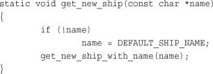
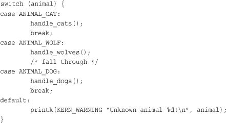
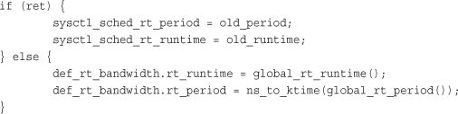
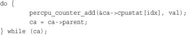
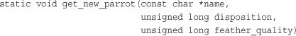
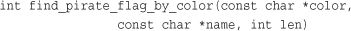
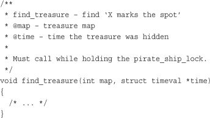

One of the greatest benefits of Linux is the large community of users and developers that surround it. The community provides eyes to check your code, experts to provide advice, and users to test and report issues. Most important, the community is the final arbiter of what code is accepted into Linus’ official kernel tree. Understanding how the system works is extremely important.
If the Linux kernel community had to call somewhere home, it would be the Linux Kernel Mailing List. The Linux Kernel Mailing List (or as the regulars abbreviate it, just lkml) is the location of the majority of the announcements, discussions, debates, and flame wars over the kernel. New features are discussed, and most code is posted to the list before any action is taken. The list sees upward of 300 messages a day, so it is not for the faint of heart. Subscribing (or at least reading a digest or the archives) is recommended for anyone interested in serious kernel development. You can learn a lot simply by watching the wizards at work.
You can subscribe by sending the following message in plain text to majordomo@vger.kernel.org:
subscribe linux-kernel <your@email.address>
You can get more information at http://vger.kernel.org/ and a FAQ is available at http://www.tux.org/lkml/.
Numerous websites and other mailing lists pertain to the kernel specifically and Linux in general. An excellent resource for beginning kernel hackers is http://kernel-newbies.org/—a website that, of all things, caters to those cutting their teeth on the kernel. Two other excellent sources of kernel information are http://www.lwn.net/, Linux Weekly News, which has a great kernel news section, and http://www.kerneltrap.org/, Kernel Trap, which provides insightful commentary on kernel development.
The Linux Kernel, like any large software project, has a defined coding style that stipulates the formatting, style, and layout of your code. This is done not because the Linux kernel style is superior (although it might be) or because your style is illegible, but because consistency of coding style is crucial to productivity in coding. Yet it is often argued that coding style is irrelevant because it does not affect the compiled object code. In a large project, such as the kernel, in which many developers are involved, consistency of coding style is crucial. Consistency implies familiarity, which leads to ease of reading, lack of confusion, and further expectations that code will continue to follow a given style. This increases the number of developers who can read your code, and the amount of code in which you can read. In an open-source project, the more eyes the better.
It is not so important what style is chosen as long as one is indeed selected and used exclusively. Fortunately, Linus long ago laid out the style we should use and most code sticks to it. The majority of the style is covered in Linus’s usual humor in the file Documentation/CodingStyle in the kernel source tree.
The stylistic convention for indention is to use tabs that are eight characters in length. This does not mean it is okay to use eight spaces for indention. Each level of indention is a tab over from the previous, and a tab is eight characters in length. For example:

For unclear reasons, this rule is one of the most commonly broken, despite its high impact on readability. Eight-character tabs make clearly identifying indention of different code blocks orders of magnitude easier after hours of hacking. The downside, of course, of eight character tabs is that after several levels of indention, not much usable space is left on the line. This is compounded by 80-character line length limits (see subsequent section). Linus’ rejoinder to this is that your code should not be so complex and convoluted as to require more than two or three levels of indention. Need you go that deep, he argues, you should refactor your code to pull out layers of complexity (and thus levels of indention) into separate functions.
Subordinate case labels should be indented to the same level as the parent switch statement, which helps alleviate the impact of eight character tabs. For example:

It is common (and good) practice to comment when deliberately falling through from one case statement to another, as shown in this example.
This section covers the spacing around symbols and keywords, not the spacing used in indention, which we covered in the last two sections. Generally speaking, Linux coding style dictates spaces around most keywords and no spaces between functions and their parentheses. For example:
if (foo)
while (foo)
for (i = 0; i < NR_CPUS; i++)
switch (foo)
Conversely, functions, macros, and keywords that look like functions—such as sizeof, typeof, and alignof—similarly have no space between the keyword and the parenthesis.
wake_up_process(task);
size_t nlongs = BITS_TO_LONG(nbits);
int len = sizeof(struct task_struct);
typeof(*p)
__alignof__(struct sockaddr *)
__attribute__((packed))
Within parentheses, there is no space proceeding or preceding the argument, as previously shown. For example, this is verboten:
int prio = task_prio( task ); /* BAD STYLE! */
Around most binary and tertiary operators, put a space on either side of the operator. For example:
int sum = a + b;
int product = a * b;
int mod = a % b;
int ret = (bar) ? bar : 0;
return (ret ? 0 : size);
int nr = nr ? : 1; /* allowed shortcut, same as "nr ? nr : 1" */
if (x < y)
if (tsk->flags & PF_SUPERPRIV)
mask = POLLIN | POLLRDNORM;
Conversely, around most unary operators, put no space between the operator and the operand:
if (!foo)
int len = foo.len;
struct work_struct *work = &dwork->work;
foo++;
—bar;
unsigned long inverted = ~mask;
Getting the spacing right around the dereference operator is particularly important. The correct style is
char *strcpy(char *dest, const char *src)
Placing a space on either side of the dereference operator is incorrect style:
char * strcpy(char * dest, const char * src) /* BAD STYLE */
Also incorrect is the C++ style of placing the dereference operator next to the type:
char* strcpy(char* dest, const char* src) /* BAD STYLE */
Brace placement is personal, and few technical reasons exist for one convention over the other, but we have to agree on something. The accepted kernel style is to put the opening brace on the first line, at the end of the statement. The closing brace goes on a new line as the first character. Following is an example:
if (strncmp(buf, "NO_", 3) == 0) {
neg = 1;
cmp += 3;
}
If the following token is a continuation of the same statement, the closing brace is not on a line by itself, but on a line shared with that token. For example:


This rule is broken for functions, because functions cannot nest inside functions:
unsigned long func(void)
{
/* ... */
}
Finally, statements that do not need braces can omit them. For example, the following is encouraged but not required:
if (cnt > 63)
cnt = 63;
The logic behind all this is K&R.1 Most of Linux coding style follows K&R Style, which is the C coding style used in that famous book.
1 The C Programming Language, by Brian Kernighan and Dennis Ritchie (Prentice Hall, ISBN# 0-13-11-362-8), nicknamed K&R, is the bible of C, written by C’s author and his colleague.
Lines of source code should be kept to fewer than 80 characters in length. This allows code to fit lengthwise on a standard 80×24 terminal.
There is no accepted standard on what to do in cases where code absolutely must wrap 80 characters. Some developers just allow the line to wrap, letting their editor handle the chore of displaying the code in a readable fashion. Other developers break up the lines, manually inserting line breaks where appropriate, perhaps starting each new line a tab stop over from the original.
Similarly, some developers line up function parameters that wrap lines with the open parenthesis. For example:

Other developers break up the lines but do not line the parameters up, instead use a standard two tabs:

As there is no definitive rule in this case, the choice is left up to you, the developer. Many kernel contributors, including myself, prefer the former example: Manually break up lines greater than 80 characters in length, trying to align the resulting new lines cleanly with the previous line.
No name should employ CamelCase, Studly Caps, or other mixed case schemes. Calling a local variable idx or even just i is perfectly fine if it is clear what it does. A cute name such as theLoopIndex is unacceptable. Hungarian notation (encoding the variable type in the variable name) is unnecessary and should never be used. This is C, not Java; Unix, not Windows.
Nonetheless, global variables and functions should have descriptive names, in lowercase and delimited via an underscore as needed. Calling a global function atty() is confusing; a name such as get_active_tty() is much more acceptable. This is Linux, not BSD.
As a rule of thumb, functions should not exceed one or two screens of text and should have fewer than ten local variables. A function should do one thing and do it well. There is no harm in breaking a function into a series of smaller functions. If you are worried about function call overhead, employ inline functions via the inline keyword.
Commenting your code is important, but the commenting must be done correctly. Generally, you want to describe what and why your code is doing what it is doing, not how it is doing it. The how should be apparent from the code itself. If not, you might need to rethink and refactor what you wrote. Additionally, comments should not include who wrote a function, the modification date, or other trivial nonsense. Such information is generally acceptable at the top of the source file, however.
The kernel uses C-style comments, even though gcc supports C++-style comments, too. The general style of a comment in the kernel resembles:
/*
* get_ship_speed() - return the current speed of the pirate ship
* We need this to calculate the ship coordinates. As this function can sleep,
* do not call while holding a spinlock.
*/
In comments, important notes are often prefixed with "XXX:", and bugs are often prefixed with "FIXME:" like so:
/*
* FIXME: We assume dog == cat which may not be true in the future
*/
The kernel has a facility for self-generating documentation. It is based on GNOME-doc, but slightly modified and renamed Kernel-doc. To create the standalone documentation in HTML format, run
make htmldocs
Or for postscript
make psdocs
You can use the system to document your functions by following a special format for your comments:

For more information, see Documentation/kernel-doc-nano-HOWTO.txt.
TypedefsThe Linux kernel developer community employs a strong dislike of the typedef operator. Their rationale is
•
typedefhides the real type of data structures.
• Because the type is hidden, code is more prone to do bad things, such as pass a structure by value on the stack.
•
typedefis just being lazy.
Therefore, to avoid ridicule, avoid typedef.
Of course, there are a few good uses of typedefs: hiding an architecture-specific implementation of a variable or providing forward compatibility when a type may change. Decide carefully whether the typedef is truly needed or exists just to reduce the number of characters you need to type.
Do not reinvent the wheel. The kernel provides string manipulation functions, compression routines, and a linked list interface, so use them.
Do not wrap existing interfaces in generic interfaces. Often you see code that was obviously ported from one operating system to Linux, and various kernel interfaces are wrapped in some gross glue function. No one likes this, so just use the provided interfaces directly.
ifdefs in the SourcePutting ifdef preprocessor directives directly in the C source is frowned upon. You should never do something like the following in your functions:
...
#ifdef CONFIG_FOO
foo();
#endif
...
Instead, define foo() to nothing if CONFIG_FOO is not set:
#ifdef CONFIG_FOO
static int foo(void)
{
/* .. */
}
#else
static inline int foo(void) { }
#endif /* CONFIG_FOO */
Then, you can unconditionally call foo(). Let the compiler do the work for you.
Labeled identifiers need to be used to initialize structures. This is good because it prevents structure changes from resulting in incorrect initialization. It also enables values to be omitted. Unfortunately, C99 adopted quite an ugly format for labeled identifiers, and gcc is deprecating usage of the previous GNU-style labeled identifier, which was rather handsome. Consequently, kernel code needs to use the new C99 labeled identifier format, however ugly it is:
struct foo my_foo = {
.a = INITIAL_A,
.b = INITIAL_B,
};
In this code, a and b are members of struct foo and INITIAL_A and INITIAL_B are their initialized values, respectively. If a field is not set, it is set to its default value per ANSI C (for example, pointers are NULL, integers are zero, and floats are 0.0). For example, if struct foo also has int c as a member, the previous statement would initialize c to zero.
If a pile of code falls into your lap that fails to even mildly resemble the Linux kernel coding style, do not fret. A little elbow grease and the indent utility can make everything perfect. indent, an excellent GNU utility found on most Linux systems, formats source according to given rules. The default settings are for the GNU coding style, which is not too pretty. To get the utility to follow the Linux kernel style, execute the following:
indent -kr -i8 -ts8 -sob -l80 -ss -bs -psl <file>
This instructs the utility to format the code according to the kernel coding style. Alternatively, the script scripts/Lindent automatically invokes indent with the desired options.
Kernel hackers are the developers who work on the kernel. Some do it for pay, some as a hobby, but nearly all for fun. Kernel hackers with significant contributions are listed in the CREDITS file in the root of the kernel source tree.
Most parts of the kernel have an associated maintainer. The maintainer is the individual (or individuals) who is in charge of specific parts of the kernel. For example, each individual driver has an associated maintainer. Each kernel subsystem—for example, networking—also has an associated maintainer. The maintainer for a specific driver or subsystem is usually listed in the file MAINTAINERS, which is also located in the root of the kernel source tree.
There is a special type of maintainer, known as the kernel maintainer. This individual actually maintains the kernel tree. Historically, Linus maintains the development kernel (where the real fun is) and the stable kernel for some period after development ends. Shortly after a development kernel becomes a stable kernel, Linus passes the torch to one of the top kernel developers. That developer continues to maintain the tree while Linus begins work on the new development tree. Given the “new world order” in which development on 2.6 continues in perpetuity, Linus remains the maintainer of the 2.6 kernel series. Another developer maintains the 2.4 series, which is in a strict bug-fix-only mode.
If you encounter a bug, the best course of action is to write a fix, create a patch, test it, and submit it as discussed in the following sections. Of course, you can also report the problem and get someone to fix it for you.
The most important part of submitting a bug report is fully describing the problem. Describe the symptoms, any system output, and a fully decoded oops (if there is an oops). More important, if you can, provide steps to reliably reproduce the problem and a brief description of your hardware.
Deciding to whom to send the bug report is the next step. The file MAINTAINERS, in the root of the kernel source tree, lists the individuals associated with each driver and subsystem—they should receive any issues related to the code they maintain. If you cannot find an interested party, send the report to the Linux Kernel Mailing List at linux-kernel@vger.kernel.org. Even if you do find a maintainer, CC the kernel mailing list.
The files REPORTING-BUGS and Documentation/oops-tracing.txt provide more information.
All changes to the Linux kernel are distributed in the form of patches, which are the output of the GNU diff(1) program in a form that is readable by the patch(1) program.
The simplest way to generate a patch is to have two source trees, one that is the vanilla stock kernel and another that is the stock tree with your modifications. A common scheme is to name the stock tree linux-x.y.z (which is what the source tarball extracts to, initially) and to name your modified tree simply linux. Then, to generate a patch of the two trees, issue the following command from one directory below your trees:
diff -urN linux-x.y.z/ linux/ > my-patch
This is typically done somewhere in your home, and not /usr/src/linux so that you do not need to be root. The -u flag specifies that the unified diff format should be used. Without this, the patch is ugly and not readable by humans. The -r flag instructs diff to recursively diff all directories, and the -N flag specifies that new files in the modified tree should be included in the diff. Alternatively, if you need to diff only a single file, you can do
diff -u linux-x.y.z/some/file linux/some/file > my-patch
You need to always diff the trees from one directory below your source trees. This creates a patch that is usable by others, even if their directory names differ. To apply a patch made in this format, do the following from the root of your source tree:
patch -p1 < ../my-patch
In this example, the patch is named my-patch and is created one directory below the current. The -p1 flag instructs diff to strip the first directory from the patch. This enables you to apply a patch regardless of the directory-naming convention used by the patch maker.
A useful utility is diffstat, which generates a histogram of a patch’s changes (line additions and removals). To generate the output on one of your patches, do
diffstat -p1 my-patch
It is often useful to include this output when you post a patch to lkml. Because the patch(1) program ignores all lines until a diff is detected, you can even include a short description at the top of the patch.
If you use Git to manage your source tree, you need to use Git to likewise generate your patches—there is no point going through all the aforementioned manual steps and bear the complexity of Git. Generating patches with Git is an easy two-part process. First, you need to author and then locally commit your changes. Making changes to a Git tree is the same as a standard source tree. You do not need to do anything special to edit a file stored in Git. After you make your changes, you need to commit them to your Git repository:
git commit -a
The -a flag instructs Git to commit all your changes. If you only want to commit changes to a specific file, you can do that, too:
git commit some/file.c
Even with the -a flag, however, Git will not commit new files until they are explicitly added to the repository. To add a file and then commit it (and all other changes), issue the following two commands:
git add some/other/file.c
git commit -a
When you run git commit, Git enables you to enter a change log. Make this entry verbose and complete, fully explaining the commit. (We cover exactly what to include in the next section.) You can create multiple commits against your repository. Thanks to Git’s design, subsequent commits can even be against the same file, building off of each other. When you have a commit (or two) in your tree, you can generate a patch for each commit, which you can treat as you do the patches described in the previous section:
git format-patch origin
This generates patches for all commits in your repository and not in the original tree. Git creates the patches in the root of your kernel source tree. To generate patches for only the last N commits, you can execute the following:
git format-patch -N
For example, this command generates a patch for only the last commit:
git format-patch -1
Patches should be generated as described in the previous section. If the patch touches a specific driver or subsystem, the patch should be sent to the maintainer listed in MAINTAINER. Either way, the Linux Kernel Mailing List at linux-kernel@vger.kernel.org should be carbon copied. The patch should be sent to the kernel maintainer (for example, Linus) only after extensive discussion, or if the patch is trivial and clearly correct.
Typically, the subject line of the email containing the patch is of the form “[PATCH] brief description.” The body of the email describes in technical detail the changes your patch makes and the rationale behind them. Be as specific as possible. Somewhere in the email, note the kernel version against which the patch was created.
Most kernel developers want to read your patch inline with your email and optionally save the whole thing to a single file. Consequently, it is best to insert the patch directly inline in the email, at the end of your message. Be aware that some email clients might wrap lines or otherwise change formatting; this breaks the patch and annoys developers. If your email client does this, see whether it has an “Insert Inline,” “Preformat,” or similar feature. Otherwise, attaching the patch as plain text without encoding works, too.
If your patch is large or contains several logical changes, you should break the patch into chunks, with each chunk representing a logical change. For example, if you both introduce a new API and change a handful of drivers to use it, you can break the changes into two patches (the new API and then the driver changeover) and two emails. If any chunk requires a previous patch, explicitly state that.
After posting, remain patient and wait for a reply. Do not be discouraged by any negative response—at least you got a response! Discuss the issues and provide updated patches as needed. If you fail to receive any response, try to discover what was wrong and resolve the issues. Solicit additional comments from the mailing list and maintainer. With luck, you might see your changes in a future kernel release—congratulations!
The most important quality of any hacker is desire and drive—an itch to scratch, and the determination to scratch it. This book provided a tour of key parts of the kernel, discussing interfaces, data structures, algorithms, and rationale. It provided an insider’s view of the kernel, in a practical fashion, to satisfy your curiosity or get you off the ground running in your kernel endeavors.
As I have said before, however, the only way to start is by reading and writing code. Linux provides a community that not only enables but also encourages both activities—so start reading and coding! Happy hacking!